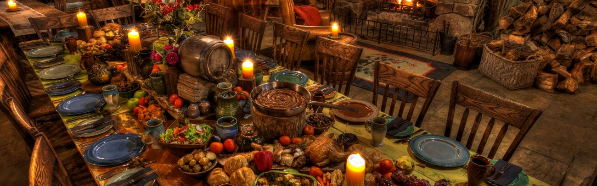

LonelyMountain Brewery

LonelyMountain Brewery
Visit The finest tavern in all of New Zealand. We are a family run tavern operated by the Durin Family. We first opened up over 2 centuries ago and the business has been passed down from generation to generation. Come try the finest ale in all of Middle Earth and have our highly acclaimed Butter Beer. We are opoen for lunch, dinner, and second dinner.
Join us for an unexpected lunch on Monday through Saturday at 12pm. We serve a large variety of dishes to which anyone will have plenty to eat.
$15.00
The dinner is the stuff of legends. We serve dishes that are unique to the lonely mountain and the surrounding region. Our main dishes consist of several roasts, fresh homegrown fruits and vegetables, and much more. After dinner we serve our very sunset soufle for dessert. All meals come with liter sized stein filled with your favorite dwarven beverage.
$25.00
On Saturdays at 10pm, join us for the most legendary Second Dinner. Second dinner is both a feast and a party. Second dinner is everything in the first dinner but even more dishes to try. There will be live music, fireworks, and all sorts of games. At the end of the night there will be a magic show where a famous magician performs a disappearing act.
$50.00 ($5.00 discount to guests who attend first dinner)